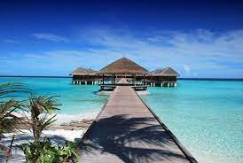
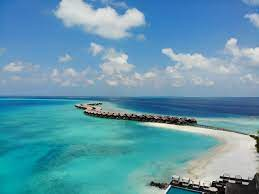

MALDIVES STORY
At Experience Travel Group, we hope to help travellers unlock the true magic of the Maldives. Our experts know where to find the best of the best hotels, and what makes each one unique too (we all know that they can all look pretty similar online!). However, we’re also passionate about taking you beyond the beaches and the marine life, and diving into an all-too-often overlooked aspect: the local culture. We can combine your luxury Maldives holiday with an insight into true Maldivian life, whether it’s tasting authentic street food or hopping aboard a local fishing boat. You may also wish to combine the Maldives with Sri Lanka, or another South Asian country; we’d love to help with that too
MALDIVES DETAILS
Christmas came early a few years ago as luxury expert Matt got to stay at both the Four Seasons in the Maldives – Kudaa Hura and Landaa Giravaaru, and Song Saa Private Island off the southern coast of Cambodia. Sustainable TravelThe Maldives WHAT ‘SUSTAINABILITY’ MEANS IN THE MALDIVES Sustainability in the Maldives can be hard to quantify. Our Head of Responsible Travel, Alice Bayly, takes a deep dive into what sustainability in the Maldives really means.
About me
Some good stuff about me.
Sections
- Programming
- Travel
- Food
- Health & Fitness
- Music & Lifestyle